来源：PDF 学习笔记 · 共 13 页 · 提取文本 3786 字 · 提取插图 15 张
UAlink协议学习笔记
目录
1. 协议分层总览
UALink 协议栈按照功能划分为 四个硬件优化层，从底层到上层依次为：
说明：UALink 是精简的 Scale-Up 协议栈，不包含传统 OSI 意义上的独立"网络层"和"传输层"。其
网络寻址/路由功能内嵌于协议层和事务层中（10 位加速器 ID + 57 位物理地址），可靠传输功能内
嵌于数据链路层（LLR 链路级重传）。下文按用户惯用的"七层视角"逐个展开，同时说明每层在
UALink 中的实际承载。
2. 物理层 (Physical Layer)
2.1 概述
UALink 物理层 直接复用 IEEE 802.3 以太网 PAM4 PHY 生态系统（线缆、连接器、Retimer），极大
降低了部署成本和供应链风险。物理层负责将上层数据转换为可在铜缆/背板上传输的串行电信号。
2.2 子层划分
2.3 关键参数
2.4 对 IEEE 802.3 的定制修改
UALink 并非直接照搬以太网物理层，在以下方面做了针对性优化：
① PCS/PMA 码字交织优化
•
采用 减少交织深度 的 Codeword Interleave 模式
•
收益：显著降低 FEC 延迟（对 Scale-Up 场景至关重要）
•
代价：牺牲部分突发错误纠正能力（Scale-Up 场景中链路距离短、信噪比高，突发错误概率低，
此取舍合理）
② RS 层与 DL Flit 的精准对齐
•
PCS 和 RS 子层增加额外机制，确保 640 字节 DL Flit 与 RS(544, 514) 码字 精确适配
•
优化延迟并最小化重传 Flit 的开销
③ PMD / Auto-Negotiation / Link Training
•
完全兼容 IEEE 802.3，不做任何修改
•
直接复用成熟的以太网链路训练和自动协商机制
2.5 物理层在收发路径中的角色
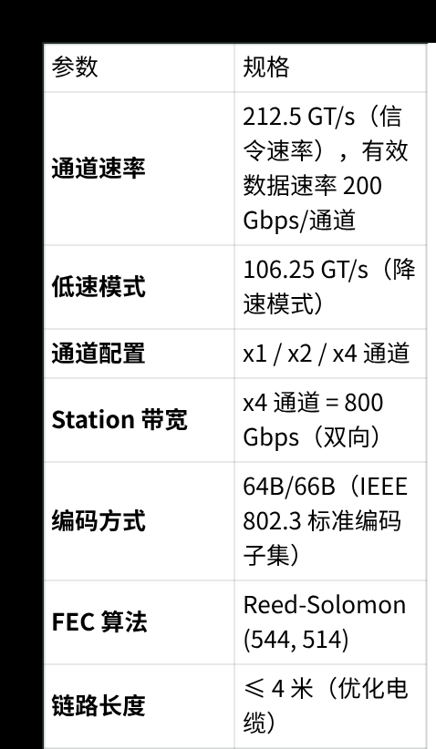
3. 数据链路层 (Data Link Layer)
3.1 概述
数据链路层位于 事务层与物理层之间，是 UALink 协议中承担"可靠传输"和"链路管理"的核心层。它扮
演传统网络协议栈中"传输层 + 链路层"的双重角色。
3.2 核心功能
3.2.1 DL Flit 封装与解封装（Packing）
数据链路层负责将事务层的 64 字节 TL Flit 聚合打包 为适配物理层的 640 字节 DL Flit：
640B DL Flit 结构示意：
3.2.2 链路级重传 (Link-Level Replay / LLR)
这是 UALink 协议中实现无损传输的关键机制，基于 640 字节 DL Flit 粒度工作：
•
每个 640B DL Flit 均携带 32 位 CRC 校验码
•
接收端 DL 校验 CRC，校验失败则发起 NAK → 发送端 DL 重传
•
保证端到端无损传输，是实现确定性延迟的关键
3.2.3 DL 消息服务 (DL Message Service)
数据链路层提供独立的 链路伙伴间消息服务，该服务在 DL 层发起并终止（不经过上层），用于：
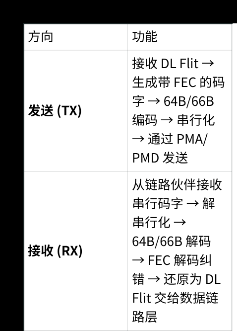
3.2.4 链路弹性 (Link Resilience)
UALink 数据链路层支持以下弹性机制：
•
链路折叠 (Link Folding)：低功耗场景下可主动关闭部分物理链路以降低能耗
•
链路冗余：一个 DL 可以对应多个 PL，单条物理链路故障后可通过另一条物理链路继续传输，应用
不会立即中断
3.3 数据链路层功能总结
4. 事务层 (Transaction Layer)
4.1 概述
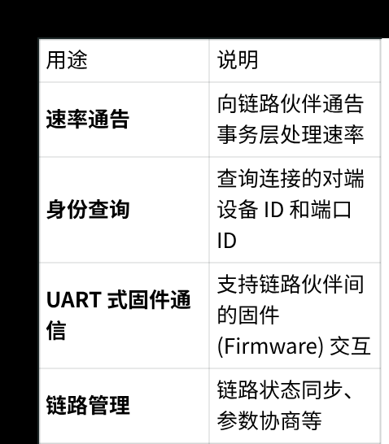
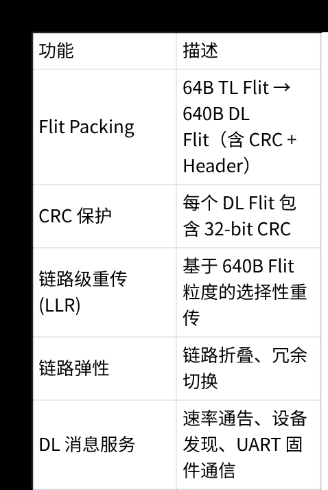
事务层是 UALink 协议栈的"中间枢纽"，承接协议层 (UPLI) 的语义请求，并转化为适合链路层传输的
Flit 格式。它是 UALink 高效传输的关键——通过 地址压缩 和 信用流控 实现了高达 93%~95% 的协议
效率。
4.2 核心功能
4.2.1 TL Flit 封装与解封装
事务层负责在 UPLI 协议通道和 64 字节 TL Flit 之间进行转换：
TL Flit 与其承载的 UPLI 通道的对应关系：
4.2.2 流式地址压缩 (Streaming Address Compression)
这是事务层的核心优化技术：
•
使用 地址缓存 (Address Cache) 机制
•
对于连续的地址访问，后续请求只需要发送 地址偏移量 而非完整地址
•
压缩后请求头仅 8 字节，写响应 4 字节，流控消息 4 字节
效率示例：
通过 21 个 TL Flit 发送 5 个写请求 + 5 个写完成 + 1 个流控包 → 效率 = 20/21 = 95.2%
4.2.3 信用流控 (Credit Flow Control)
事务层管理端到端的信用（Credit）机制：
•
接收端向发送端返回 Credit，指示可用的接收缓冲空间
•
发送端仅在有 Credit 时发送数据，防止接收端缓冲区溢出
•
支持每个端口独立管理多个未完成的请求（通过 Transaction Tag）
4.3 事务层功能总结
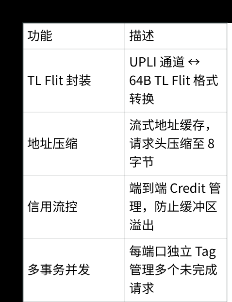
5. 协议层 / UPLI (UALink Protocol Level Interface)
此层对应传统分层模型中的"应用层"和"网络层"角色。
5.1 概述
UPLI 是 UALink 协议栈的最上层，定义了加速器之间通信的 完整语义接口。它通过结构化的请求/响应
模型实现远程内存访问，使整个 UALink Pod 中的加速器可以像访问本地内存一样访问远端内存
（Load/Store 语义）。
5.2 UPLI 四通道架构
UPLI 接口由四个独立逻辑通道组成，每个通道承载不同类型的通信：
每个通道采用 TDM（时分复用） 模式运行，允许多个端口高效共享接口。
5.3 内存语义操作
UALink 支持三种核心内存操作：
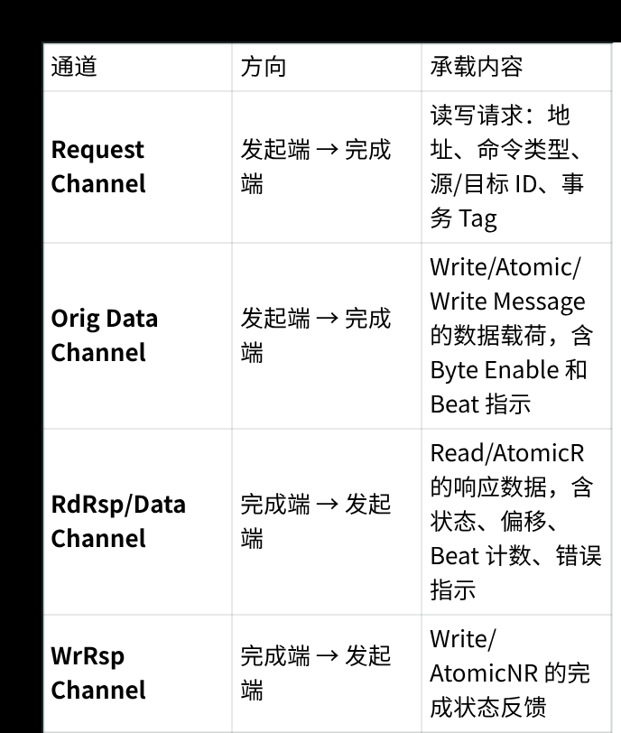
5.4 寻址与路由
•
10 位加速器 ID：作为源/目标路由标识符，支持最多 1024 个加速器
•
57 位物理地址：支持最大 128 PB 的直接可寻址内存空间
•
源-目标路由：简单的源→目标直接路由，UALink 交换机基于加速器 ID 转发
•
分区全局地址空间 (PGAS)：虚拟地址 → 加速器 MMU → 网络物理地址 (NPA) → Link MMU → 目标
加速器
5.5 UPLI 事务生命周期
5.6 UPLI 关键特性
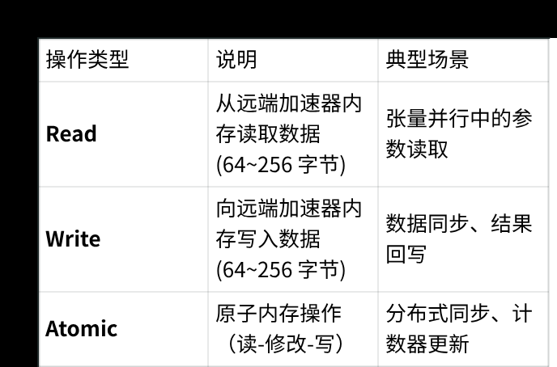
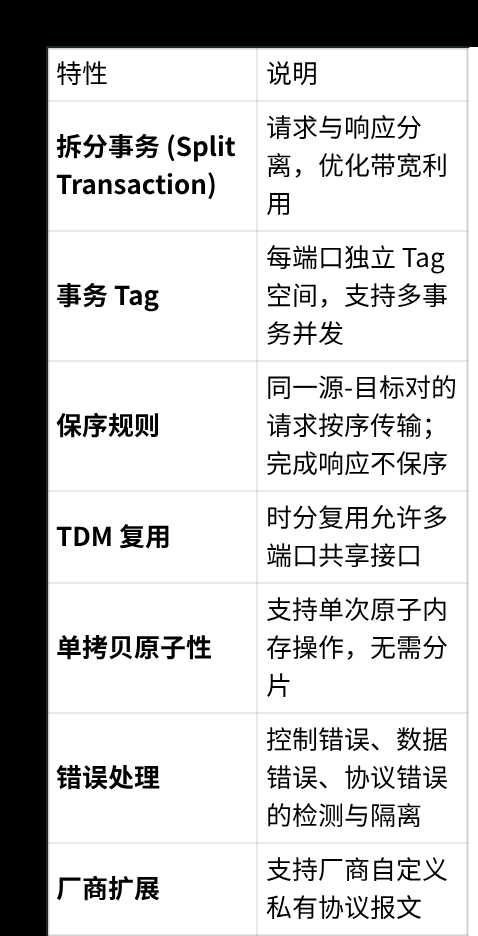
6. Packing 机制（跨层打包流程）
UALink 的 "Packing" 是一个跨层协作的过程，并非独立的一层，而是由 事务层 (TL) 和数据链路层
(DL) 协同完成的二级聚合机制：
6.1 二级打包流程
6.2 打包效率分析
7. 报文在 UALink 中的完整处理流程
7.1 发送路径 (Accelerator A → Accelerator B 写操作示例)
7.2 往返延迟 (Round-Trip Latency) 分解
8. UALink 软件整体框架
8.1 架构总览
UALink 的软件框架采用 三层管理架构：Pod 控制器 (集中式) + 节点代理 + 交换机代理 (分布式)，基于
开放的行业标准接口。
8.2 管理接口标准
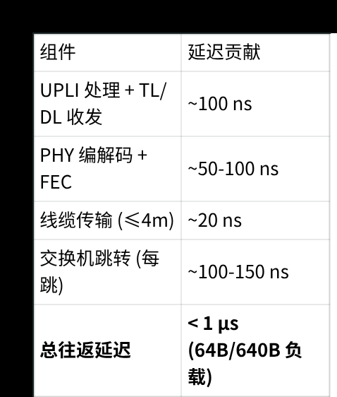
8.3 软件栈组件
8.4 部署拓扑
UALink 支持多种拓扑以适应不同规模需求：
8.5 虚拟 Pod (vPod) 机制
•
每个 vPod 内加速器可互相通信
•
不同 vPod 之间流量完全隔离
•
单 vPod 故障不影响其他 vPod
•
允许多租户共享同一物理基础设施
9. 安全性 — UALinkSec
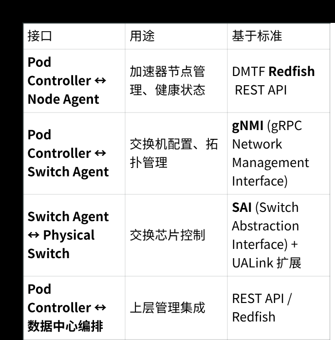
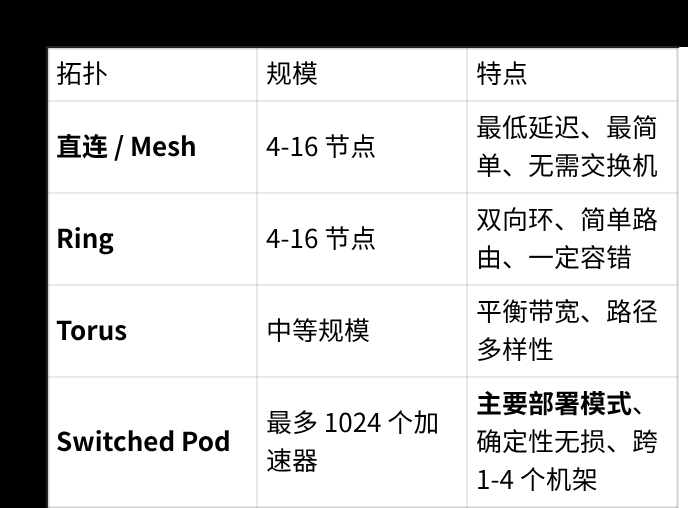
9.1 概述
UALinkSec 是 UALink 协议内置的硬件级安全框架，保护 UALink 网络和交换机上的流量免受物理攻击
者威胁。
9.2 安全能力
9.3 安全架构
UALink 2.0 进一步增强安全：交换机参与集体通信时可对流量进行安全解密-处理-重新加密，同时
支持多租户密钥隔离和轮换。
10. 总结与关键技术指标
10.1 分层职责速查表
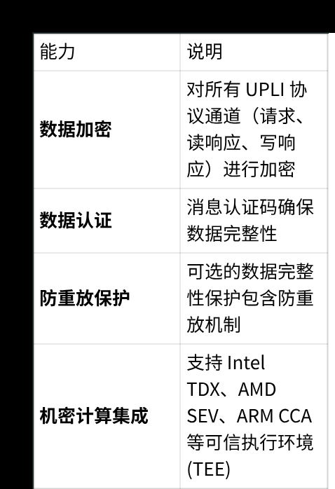
10.2 关键技术指标
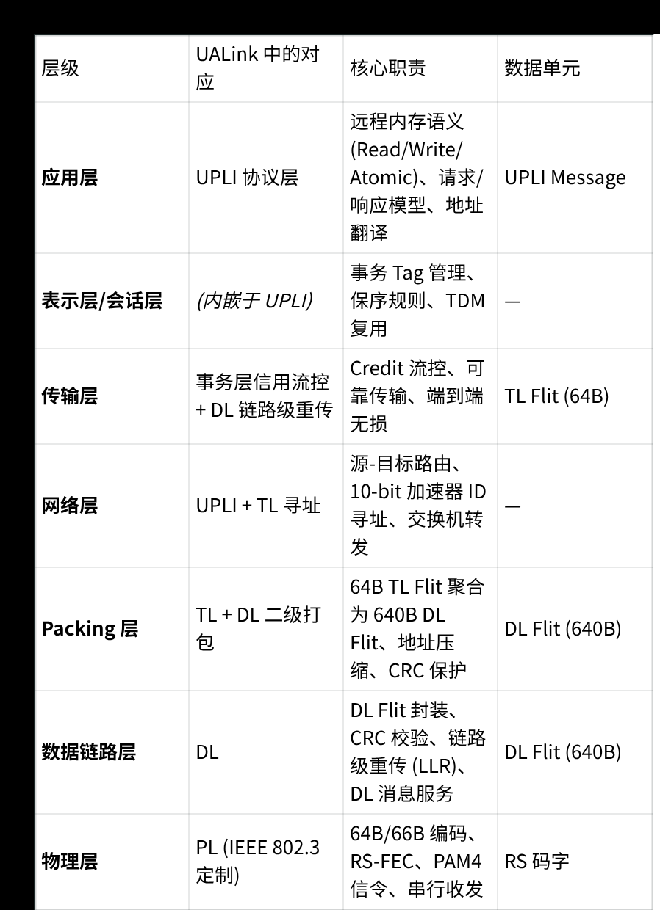
10.3 与 NVLink 的核心差异
参考资料
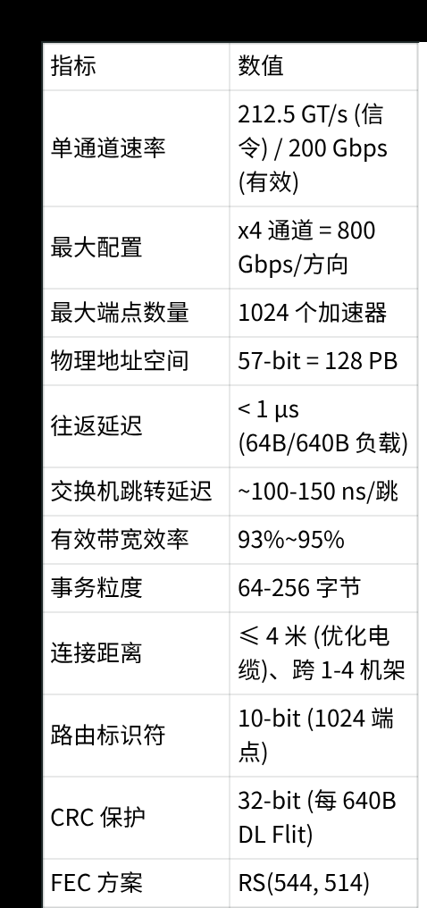
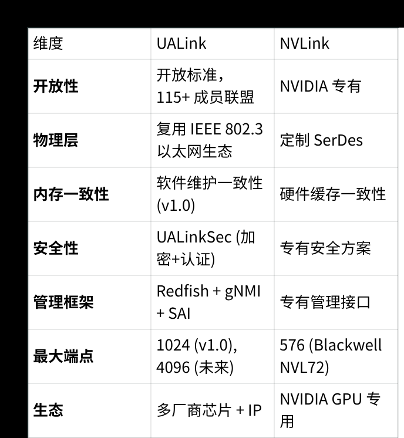
•
UALink 200G 1.0 Specification, UALink Consortium, April 2025
•
UALink 1.0 White Paper, UALink Consortium
•
UALink: An Open, High-Efficiency Scale-Up Interconnect for AI (White Paper Publication,
Jan 2026)
•
Cadence UALink 200G Specification Overview Blog, May 2025
•
UALink 200G 1.0 Scale-Up 互联技术白皮书 (中文版)